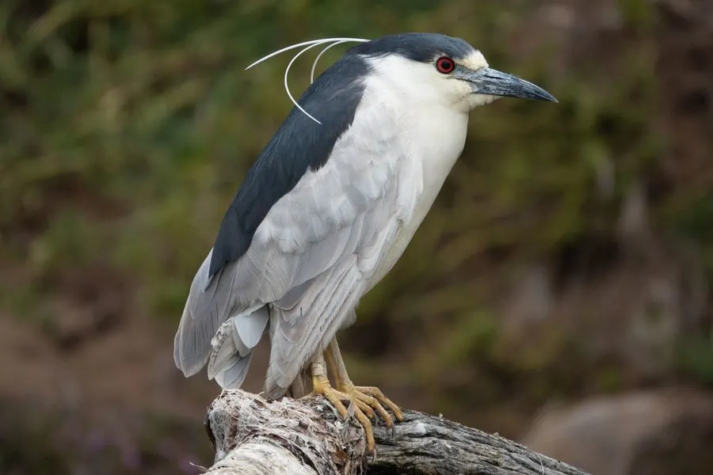

鸟类 · 动物界
夜鹭 Nycticorax nycticorax

黄昏后才活跃的鹭类，头后拖着几根细长的白色饰羽，眼睛鲜红，白天常站在水边树丛中一动不动地休息。
- 分类
- 门脊索动物门纲鸟纲目鹈形目科鹭科属夜鹭属
- 栖息环境
- 湖泊、河流、沼泽、水田与城市公园的水边树丛
- 地理分布
- 欧洲、亚洲、非洲和美洲的温带与亚热带地区，中国大部分地区有分布
- 保护级别
- IUCN 无危（LC）；中国“三有”保护动物
物种志
夜鹭体长 58–65 cm，体重 500–800 g。它的头顶和背部呈黑蓝色，翅膀灰色，腹部白色，眼睛鲜红色，繁殖期头后会长出几根细长的白色饰羽。它体型粗壮，颈部较短，缩着脖子站在树上时像一只灰色的大鸟。
夜鹭广泛分布于欧洲、亚洲、非洲和美洲的温带和亚热带地区，中国大部分地区都有分布，北方种群冬季南迁。它们栖息在湖泊、河流、沼泽、水田和城市公园的水边，多在黄昏和夜间活动，捕食鱼、虾、蛙、昆虫和小型哺乳动物。繁殖期在树上或芦苇丛中集群营巢，每窝产卵 3–5 枚，孵化 21–23 天。夜鹭适应城市环境，目前被列为无危物种，中国将其列入“三有”保护名录。
形态与习性
- 食性鱼、虾、蛙、昆虫和小型哺乳动物
- 体长58–65 cm
- 体重500–800 g
- 繁殖每窝 3–5 枚卵，孵化 21–23 天
- 习性黄昏和夜间活动，白天缩颈站在树丛中休息
- 寿命野外约 10 年
趣味知识
- 夜鹭的眼睛鲜红色，黄昏后才活跃起来，白天常缩着脖子休息。
- 繁殖期它的头后会垂下几根细长的白色饰羽，十分好认。
- 夜鹭很适应城市环境，常出现在公园湖泊和河道边。